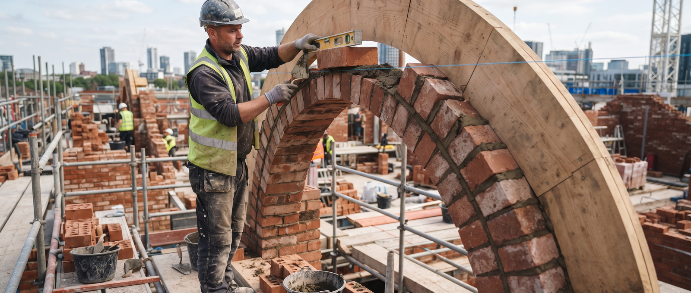

cdd-configdrift-alertonschemaviolation
The String Line. A command line validator that checks one configuration file against one JSON schema. A brick out of line is pointed out on the spot, in print: the whole alert is a printed error and an exit code, sent nowhere else.

InputOne configuration file (JSON or YAML) and one JSON schema
LibraryValidation runs through the jsonschema library
Format
-f sets json or yaml; the format is autodetected if the flag is omittedOn a violationThe validation error is printed and the run exits 1
Usage
python3 main.py [-f json|yaml] [-l LEVEL] CONFIG_FILE SCHEMA_FILE
| Option | What it does |
|---|---|
CONFIG_FILE | Path to the configuration file (JSON or YAML). |
SCHEMA_FILE | Path to the JSON schema file. |
-f, --format | Format of the config file: json or yaml. Autodetects if omitted. |
-l, --log-level | Logging level: DEBUG, INFO, WARNING, ERROR, or CRITICAL. No default is stated in the README. |
-h | Show help message and exit. |

Verified behavior and stated limits
- A config with port 80 against a schema requiring a minimum of 1024 printed the validation error and exited 1.
- A config with port 8080 against the same schema printed "Configuration is valid." and exited 0; the same valid result was obtained with
-f jsongiven explicitly. - A missing config file exits 1.
- The alert is a printed error and an exit code rather than any message sent elsewhere; no alert channel is named in any section.
- The tool validates one configuration against one schema. It compares no baseline and tracks no drift over time.
- The log level arrives with no default stated; the notch is left unpainted rather than guessed at.